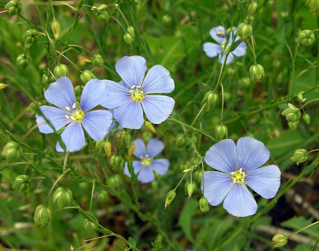

The Ephemeral Blue Flax
I am continually amazed at the beautiful,delicate Blue Flax that somehow took hold garden.They are awash in color every morning,yet not a single flower remains by the afternoon.They are the very definition of ephemeral.
I am continually amazed at the beautiful,delicate Blue Flax that somehow took hold garden.They are awash in color every morning,yet not a single flower remains by the afternoon.They are the very definition of ephemeral.